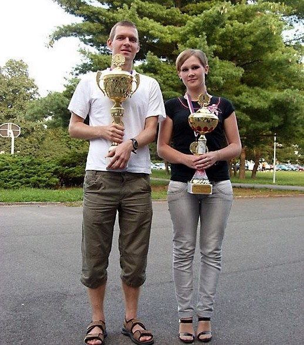

新科世界冠军Sushkov Vladimir （苏切科夫）专访
#1 新科世界冠军Sushkov Vladimir （苏切科夫）专访 作者：舍露里 发表时间：2009-10-23 12:26:49
锲而不舍，精进不休——新科世界冠军 Sushkov Vladimir （苏切科夫）专访
By 贺加贝 2009 年 9 月 12 日

贺： 你好，很多中国棋手都很欣赏你，可是没什么机会了解你。你能向大家简单介绍一下自己吗？
Vladimir ：你好。我今年 30 岁，是个物理学者，研究“尘埃等离子体”，现在正住在德国写我的博士论文。 当别人问起我的兴趣爱好时，我第一个想到的就是音乐，因为我是狂热的音乐迷。音乐对于我的意义，远远不止是兴趣，它是我灵魂的写照。我自己会弹钢琴，而且听过的 CD 已经不可计数了。我也喜欢读书、谈论哲学、以及在大海里游泳。另外，我还很擅长跑步。
#2 Re:新科世界冠军Sushkov Vladimir （苏切科夫）专访 作者：极地剑客 发表时间：2009-10-23 13:40:30
开七个小黑窗口分析?很好很强大的电脑~#3 Re:新科世界冠军Sushkov Vladimir （苏切科夫）专访 作者：魔铃 发表时间：2009-10-23 13:59:42
 强大的贝贝 强大的小苏
强大的贝贝 强大的小苏
俺还以为小苏是攻击型的 豆豆是聪明的 茂茂是天赋的 怎么都反了
#4 Re:Re:新科世界冠军Sushkov Vladimir （苏切科夫）专访 作者：17号蓝星仔 发表时间：2009-10-24 16:03:43
引用：
原文由 极地剑客 发表于 2009-10-23 13:40:30 :
开七个小黑窗口分析?很好很强大的电脑~
#5 Re:新科世界冠军Sushkov Vladimir （苏切科夫）专访 作者：索非亚 发表时间：2009-10-24 17:42:57
 以一对七,强大的苏
以一对七,强大的苏
顺便提下,第二张图的眼神感觉很邪恶~~哈哈
#6 Re:新科世界冠军Sushkov Vladimir （苏切科夫）专访 作者：岳麓小棋皇 发表时间：2009-10-24 17:48:43
 没有鲜花,但是咱可以手工顶置!!!
没有鲜花,但是咱可以手工顶置!!!
#7 Re:Re:新科世界冠军Sushkov Vladimir （苏切科夫）专访 作者：aabb 发表时间：2009-10-24 23:16:38
引用：同意。。。
原文由 魔铃 发表于 2009-10-23 13:59:42 :
俺还以为小苏是攻击型的 豆豆是聪明的 茂茂是天赋的 怎么都反了
#8 Re:新科世界冠军Sushkov Vladimir （苏切科夫）专访 作者：无尽 发表时间：2009-10-24 23:23:40
不知道哪位老师在管理中国五子棋博客，建议上舍露里MM也当博主，就可以直接发去那里啦~~~
［ 失落刀 于 2009-10-25 10:53:35 时花20金币送鲜花一朵］
#9 Re:新科世界冠军Sushkov Vladimir （苏切科夫）专访 作者：蝶雨 发表时间：2009-10-25 20:44:32

#10 Re:新科世界冠军Sushkov Vladimir （苏切科夫）专访 作者：屏蔽 发表时间：2009-10-26 11:23:44
好采访……偶像真不错#11 Re:新科世界冠军Sushkov Vladimir （苏切科夫）专访 作者：傀儡 发表时间：2009-10-27 13:17:06

#12 Re:新科世界冠军Sushkov Vladimir （苏切科夫）专访 作者：慕容晓文 发表时间：2009-11-2 10:35:51
据说中村在日本之所以总是拿白棋，原因在于别人不敢让他拿黑棋……
呵呵
#13 Re:Re:新科世界冠军Sushkov Vladimir （苏切科夫）专访 作者：啥呀 发表时间：2010-1-22 13:27:36
弱问一句，豆豆的真身是？
#14 Re:新科世界冠军Sushkov Vladimir （苏切科夫）专访 作者：真树 发表时间：2011-8-6 13:30:51
顶苏切
#15 Re:新科世界冠军Sushkov Vladimir （苏切科夫）专访 作者：小马甲 发表时间：2011-8-7 14:43:22
支持下
#16 Re:新科世界冠军Sushkov Vladimir （苏切科夫）专访 作者：音飘扬 发表时间：2012-9-28 8:03:53
看去像练跑酷的 赞